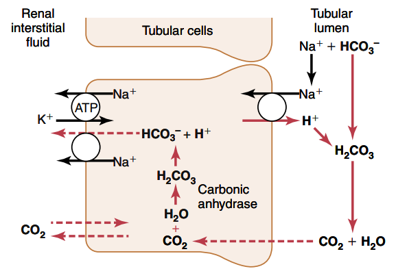
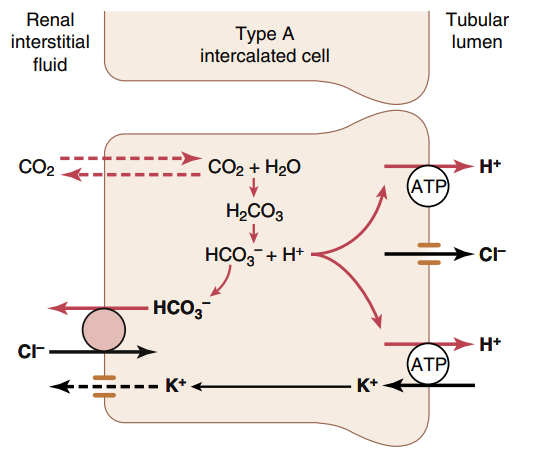
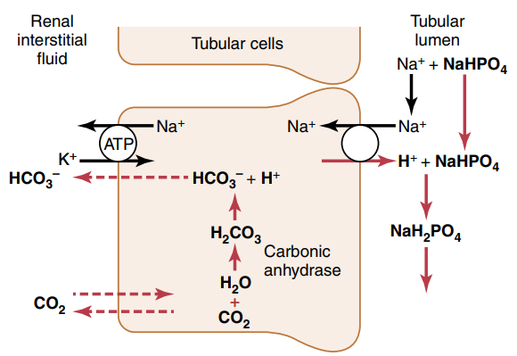
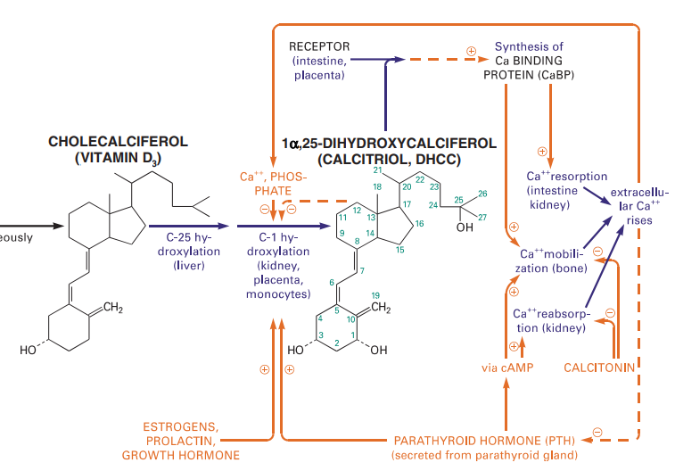

Doivent être apporté par l’alimentation:
Non-essentiels
Le glutamate sert à convertir ces acides aminé entre eux.
NB: la proline a une structure en anneau rigide et va donc contraindre fortement la structure de la protéine
Non essentiels, dérive de 3-phosphoglycérate
Essentiels. Squelette carboné venant du pyruvate
"Aromatique".
3 mécanisme de défense :
Buffer + H+ ↔︎ H Buffer
CO2 + H2O ↔︎ H2CO3 ↔︎ H+ + HCO3− avec carbonic anhydrase (alvéoles pulmonaires, )
Acidose : tampon du H+ de l’acide avec HCO3- pour produire CO2 et H2O. Le CO2 est éliminé par le poumon. Exemple : HCl -> H+ + Cl-
alcalose : tampon du OH- avec H2 CO3 pour former du HCO3-, qui sera excrété au niveau rénal
NB: le CO2 dans le sang est proportionnel à la pCO2: CO2 = 0.03 pCO2
C’est le tampon extracellulaire le plus important. En effet, l’efficacité est maximale pour pH = pK mais le pK est à 6.1 pour un pH extracellulaire de 7.4. Ce paradoxe est résolu par la régulation du pH extracellulaire par les reins et les poumons.
Le pK est proche du pH 6.8 vs 7.4 mais la concentration extracellulaire est faible donc la capacité de tampon est moindre que celle des bicarbonates. Il est très important dans les tubules rénaux : concentration impportante de phosphate à cet endroit et le pH est nettement diminué (proche du pK donc idéale)
60-70% du tampon total se fait dans le cellules et la plupart vient des protéines intracellulaire
Le pH intracellulaire "suit" le pH extracellulaire dans les heures qui suivent (diffusion lentes H+ et HCO3-)
Le CO2 est formé de manière continue par les processus métaboliques intracellulaires. Il va ensuite diffuser dans le sang et liquides interstitiels puis transporté dans les alvéoles. La ventilation pulmonaire va le transférer dans l’atomosphère.
La réponse respiratoire est efficace à 50-70%. Elle este 1 à 2x plus efficace que les tampons extra-cellulaire. Évidemment, réponse diminuée par une anomalie de la fonction respiratoire (emphysème…)
Production d’acides non volatiles (protéines surtout) qui ne sont pas éliminables par la respiration Le rein doit également éviter la perte de bicarbonates -> quasiment tout est réabsorbé. Pour cela, il faut une excrétion de H+ pour réabsorber le HCO3- filtré
Alcalose -> diminution sécrétion H+ -> diminution réabsorption bicarbonates Acidose -> augmentation sécrétion H+ -> augmentation réabsorption et production des bicarbonates
Pour chaque bicarbonates réabsorbé, il faut produire un H+
90% tubule proximal
Pour réabsorber les bicarbonates, ils vont être combinés aux H+ sécrétes,form ant du H2 CO3, décomposé en CO2 et H2O. Le CO2 va pouvoir passer la membrane tubulaire et converti en HCO3- qui va être réabsorbé dans le sang: via le Na+ - HCO3- (tubule proximal) ou Cl- HCO 3^- (autres parties)

Le bilan net d’une excrétion d’ H+ est donc seulement la réabsorption de HCO3- En temps normal, il y a un légèr excès d’excrétion H+ sur HCO3- dans les tubules. H+ est combiné avec les phosphates et l’ammoniaque.o Si HCO3- > H+ dans les urines, il est excrété. Si H+ > HCO3- dans les urines, il est excrété avec phosphate et ammionaque.
Il y a un second type de cellule qui permet d’excréter du H+ avec une pompe "active" plutôt qu’un contre-transport. Ce mécanisme produit peu de quantité d’H+ mais permet de concentrer forcement les ions H+

Une fois que tous le HCO3- a été réabsorbé, l’excès de H+ se combine avec le phosphate HPO4^=  Quand un H+ supplémentaire se combine avec autre chose qu’un bicarbonate, il y a un gain net d’un bicarbonate
La plupart du phosphate est réabsorbé donc le tampon se fait surtout via l’ammoniaque (NH3 et ion NF3)
Dans le tubule proximale, NH4++ est synthétisé depuis la glutamine (métabolisme des acide aminés dans le foie) selon : glutamine -> 2NH4+ + 2 HCO3- Les 2 NH4++ sont sécrétés et les 2 bicarbonate sont réabsorbés, créant de nouveaux bicarbonates
Dans le tubule collecteur, le H+ va se combiner avec NH3 pour former du NH4+
Pour l’acidose chronique, l’excrétion de NH4+ est le mécanisme dominant
Excrétion d’acide par le rein = excrétion NH4+ + buffer non bicarbonate et non ammonique - réabsorbtion H+ dans le sang = excrétion NH4++ {buffer autre que les bicarbonate et l’ammoniaque} - excrétion HCO3-
Il en faut suffisament pour réabsorber le HCO3- filtrer et excréter NH4++ (acide non volatide)
Alcalose : diminution sécrétion H+ pour réabsorber moins de HCO3- Acidose : augmentation sécrétion H+ pour réabsorber tout le HCO3- et pouvoir excréter des H+ (donc augmenter les HCO3-)
Sécrétion H+ augmentée par
Diminuée par l’inverse
Acidose
-> chronique: augmentation production NH4++ (donc augmentation excrétion H+ et ajout HCO3- sang) si métabolique, les poumons aident à corriger
Les hépatocytes synthétisent les acides biliaires primitifs (acide cholique, acide chénodésoxycholique) à partir du cholestérol, qui sont conjugés avec la taurine et glycine puis sécrétés dans la vésicule bilaire.
Stockés dans la vésicule biliaire, ils sont relargé dans l’intestin au moment de la digestion.
Ils peuvent être réabsorbés et retourner dans le foie via la veine porte, ou excrétés dans les salles ou métabolisés par les bactéries intestinales (acides biliaire secondaire).
Dans le foie, ils participent à la formation de la bile. dans la bile, ils évitent la formation de calculs biliaires en permettant la solubilisation du chostérole et des phospholipides. Au niveau intestinal, ils agissent comment émulsifiants sur les lipides (triglyceride, cholesterol…) pour favoriser leur réabsorption par la muqueuse.
Synthèse par les hépatocytes
60% secteur interstitiel, 40% vasculaire (=2/3 protéines circulantes)
Demi-vie 20 jours. Non-excrété par le glomérule (taille et charge négative)
Libéré par la dégradation des acides aminées.
Pour éviter une excrétion continue d’eau. il est converti en urée dans le foie puis excrété. Cela permet d’éviter la toxicité de l’ammoniaque.
synthétisé par myocyte du ventricule gauche (et droit) en réponse à une surcharge volémique
Se fixe sur les récepteurs de type A sur endothélium vasculaire
compense la surcharge volémique par
marqueur global de l’issufisance cardiaque (diagnostic, pronostic, suivi)
Enzyme dans le cytosol ou mitochondrie des cellule : muscles squelettiques++ et cardiaque, cerveau, rein, gastrointestinal
Catalyse la phosphorylation de la créatine en créatine phosphate par l'ATP (avec production ADP) Voir Vie de la créatine
contraction musculaire
Il s’agit d’un produit de l’arginine (transformation en glycine par la glycine amdinotransferase, qui va générer du guanidinoacetate et de l’ornithine. Cette première est méthylée en créatine). Ces réactions ont lieu dans le foie, rein et cerveau.
La créatine est transportée dans les muscles squelettique La phosphorylation de la créatine sert à faire la phosphocréatine, qui est un réservoir d’énergie (muscle squelettique, cerveau surtout) car la déphosphorylation permet de créer de l’ATP. $creatine + ATP ↔︎ phosphocreatine + ADP $
Pour l’excrétion dans l’urine, la créatine est convertie en créatinine.
Pour excrétion dans les urine, la créatine est tansformée en créatinine
Libérée par le muscle
Éliminée par le rein par filtration glomérulaire et excrétion dans le tubule proximal
Pas de rôle physiologique
Pas de réabsorption par le rein, donc marqueur de fonction rénale
La clairance de la créatinine sert d’approximation pour le débit de filtration glomérulaire (voir DFG)
Permet d’éliminer l’ammoniaqueet l’urée
le CO2 passe du cytosol dans la mitochondrie puis : CO2 + H2O ← HCO3− + H+ Puis HCO3− + ATP → NH3 + ADP
Le NH3 est converti en carbamate -> carbamoyl-P (catalysé par N-acetyl glutamate, qui entre dans le cycle
La clairance de la créatinine est estimée par le Débit de Filtration Glomérulaire. Évaluation DFG à partir de la créatininémie
Attention : formules non utilisable chez l’enfant (formale du Schwartz), variation aigüe de la fonction rénale, cirrhose hépatique décompensée, gabarit hors norme, amyotrophie important, grossese
dans ce cas, utiliser clairance urinaire sur urines de 24h = créat urinaire*débit/créat sanguine
Énergie:
Synthèse majeure partie des protéines sauf immunoglobulines
Synthèse du cholestéral Épuration :
déchet du métabolisme = amoniaque sous forme d’urée (catabolisme azotée), bilirubine ,
hormones (stéroïdes)
Transforme médicaments, toxique…. par modification (ex: cytochrome P450) puis conjugaison
Production
Cycle:
Patho:
Patho: sursaturation du cholestérol -> cristaux -> calcul
Attention :
NB: LDH (lyse cellulaire) non spécifique mais très marqué pour métastase hépatique
Surtout défaut d’excrétion bilirubine conjugée + augmentation bilirubine totale
Diminution/arrêt sécrétion biliaire. 3 atteintes :
Marqueurs
Coagulation: Diminution du TP avec facteur V normal
Autres
CRP, vitesse sédimentatino érythrocytaire, électrophorèse ptoténies sériques
Augmentation ALAT/ASAT
aigiue > 10N: hépatite virale aigüe A, B, médicaments (IMAO, méthyldopa…), toxique (paracétamol, champignon), lithiase de la voie biliaire prinicpale, ischémie hépatique aigue
aigüe modérée 3-10N: hépatite virale A, B, autre infections (EBV, cmv, HSV, toxoplasmose), alcool, surcharge pondérale, atteinte hépatobiliaire chronique
chronique < 3: VHC, VHB chronique, stéatose hépatique du diabote/dyslipidémie,/obésite, alcoolisme (rappport inversé), autres médicaments (isoniazide…), autto-immun, surcharge (hméocromatose, Wilson) NB: élimiier une nécrose musculaire/myocardique, pancréate NB: cherche un risque d’hépatite fulminante : TP, facteur v, ammionémie
Bilan enzymatique anormal
| γ GT | PAL | ALAT,ASAT | Étiologies |
|---|---|---|---|
| augmenté | augmenté | augmenté | hépatopathie cytolytique |
| hépatite virale, alcool, médicaments | |||
| augmenté | augmenté | N | hépatopathie cholestatique |
| médicaments (antidépresseurs), biliaire, pancréas, foie | |||
| augmenté | N | N | alcool, médicaments inducteurs |
| enzymatique, stéaotose, sucharge pondérale | |||
| +/- hyperthyoroïdies, parasite |
Ictère : augmentation bilirubine
| non conjuguée : | - extra-hépatique | hémolyse (nouveau-né, constit, acquis) |
| - hépatique | : Gilbert, Criggler-Najjar, ictère transitoire du nouveau-né | |
| conjuguée | - intra-hépatique | : médicaments, hépatite virale/parasitaire, autoimmun, |
| carcinome, cirrhose biliaire primitive, septicémie, cholestase gravidique | ||
| - extra-hépatique | lithiase cholédoque, cancer pancréas, pancréatite chronique | |
| , cholangite sclérosante, sténose/carcinome des voies biliaires |
αfoetoproténie = suivi et non iagnostic. régérénration des hépatocyttes
Osmolalité = $2 × [NA+] + [Gly] ≈ 285 $ mOsm/kg d’eau
Pure si iso-osmolaire (l’eau "suit")
Étiologie :
Iso-osmolaire (l’eau "suit")
Étiologies : insuffisance cardiaque, cirrhose ascitique, syndrome néphrotique surtout
Donc hyperosmolalité plasmatique avec appel d’eau intra-cellulaire
Étiologie :
Très répandues dans les tissus.
Libérées dans le sang lors de l'altération de la membrane cellulaire
Permet le passage de métabolite à travers les membranes cellulaires (catalyse l'hydrolyse d'esters monophosphorique en libérant du phosphate)
2 sources
Le calcidiol est peu controlé mais la seconde est régulée par la PTH et phosphatémie :

Dégradation par oxidation/hydroxylation et excrétion dans les urines/selles
Calcitriol: